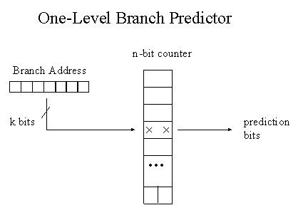

CMP301B: Computer Architecture
Introduction
A program performance is affected by:
- Algorithm
- Programming Language, Compiler, Architecture...
- Processor and Memory
- I/O system
Eight great ideas in Computer Architecture
- Design for Moore's law
- We need to anticipiate where the technology will be when the design finishes, instead of where it starts.
- Use Abstraction to simplify design
- Use abstraction to hide low level details to simplify models at a higher level
- Make the common case fast
- Making common case faster will better enhance the performance
- Performance via Parallelism
- Use parallelism to enhance your performance
- Performance via Pipelining
- Use pipelining (parallelism on the level of instructions) to enhance performance
- Performance via Prediction
- It is better to predict and be right sometimes than to do nothing at all
- Hierarchy of memories
- Use different level of memories with different speeds
- Dependability via Redundancy
- Add redundant components to make system realiable
Performance
When measuring CPUs' performance, we are concerned with:
- Reponse time
- How long does it take for the job to run?
- Throughput
- How many jobs can the machine run at the same time?
Execution Time
- : Execution time
- : Instruction count for a program
- : Cycles per instruction
- : Cycles per second
- : Cycle time
- , X is n times faster than Y
Note: changing the cycle time often changes the
number of cycles required for various instructions
Components Analysis
Which component affects what?

Pitfalls
- Using a subset of the performance equation as a performance measure
- Expecting the improvement of overall performance by the same ratio of improvement of one aspect
MIPS Instruction Types
The MIPS architecture has 3 types of instructions:
1. ALU Instructions (R-type)
Logical and Arithmetic operations such as: ADD, SUB, AND, shift
IR format

op: opcode for instruction
rs: address of source1 register
rt: address of source2 register
rd: address of destination register
shmat: shift amount
funct: type of ALU operation
2. Immediate Format Instructions (I-type)
Instructions with immediates, such as
- lw and sw (offset counts as immediate)
lw Rt, N(Rs),sw Rt, N(Rs) - branches like beq and bne
beq Rs, Rt, Label
IR format

3. Jump Format Instructions (J-type)
- Conditional and Unconditional branches
- They cause an immediate value to be added to PC
IR format
MIPS Stages of Execution
The MIPS ISA breaks down the execution of all types of instructions into 5 stages:
- Instruction Fetch
- Instrucion Decode
- ALU / Instruction Execute
- Memory Access
- Register Write (Write-Back)
Each stage is executed in a whole cycle.
1. Instruction Fetch (IF)
Fetching the instruction involves:
- Reading the instruction from instruction memory
- Updating the PC to hold address of next instruction
Note: Updating the PC and fetching the instruction occurs every instruction so it does not need special control signals.
2. Instruction Decode (ID)
Decoding the instruction involves:
- Sending opcode of fetched instruction into control unit
- Reading values from register file
3. Instruction Execute (IE)
- This is the core of the instruction execution, it executes the instruction logic itself.
- Only for R-type and I-type instructions
For each instruction type we have a different flow:
- R-type:
- Perform the ALU operation on the source registers
- I-type:
- For lw and sw: calculate the offset of the memory address
- For branch: compute branch condition (if exists) and compute branch offset
4. Memory Access (MEM)
- Only for lw and sw
- Access the memory to fetch or store values.
- For lw, the actual value fetched from memory is moved to the register on the next cycle.
5. Write-Back (WB)
- Only for Register-Register ALU instructions or lw instruction
- Writes the data into the destination register
MIPS Single Cycle Datapath

The separate stages and components are controlled by a Control Unit that is responsible for setting the control signals based on the instruction

Note: You are encouraged to refer to the lecture here and trace each instruction type execution flow on the single cycle datapath.
Executing multiple instructions
When executing a single instruction at a time:

Pipelining
- Pipelining is overlapping processor subtasks to enhance performance
- It does not increase latency of single task, but it increases throughput of entire processor
- i.e. it reduces average instruction time, therefore reducing average CPI
Benchmarking pipelining
-
For the first instruction in a pipelining flow, we take time, where is the time of the longest stage, is number of stages
- However for next instructions we only need time for each.
-
For n iterations of tasks, the execution times of -stage pipeline:
- With no pipelining: time units
- With pipelining: time units
- Speedup: for large
Executing multiple instructions
- We can overlap stages and execute multiple stages at the same time, resulting in a huge performance boost
- Note that the execution time of any stage is the time of the longest stage

The pipelined datapath
- Need to add registers between stages to avoid data corruption

The Control Unit needs to deal with the registers between stages instead of the units themselves.

Pipelining Hazards
-
Situations that prevent an instruction from being executed in its designated clock cycle
-
The simplest solution for hazards is to stall the pipeline (not efficient)
- We can solve some situation of the hazards without affecting performance as much.
Structural Hazards
- Happens when multiple stages want to use the same hardware at the same time.
- Conflict for use of a resource.
- Usually solved by throwing more hardware at the problem.
Scenarios
- Load/Store instruction trying to read/write memory while another instruction is being fetched

- Solution: can separate instruction memory and data memory into separate hardwares.
- One instruction trying to write into a register while another is reading from it in the same clock cycle

- Solution:
- Write during first 1/2 of the clock cycle, Read during second 1/2 of the clock cycle
- Build RegFile with independent read/write ports
Note: We can also stall the pipeline to solve structural hazards, however is this is unnecessary.
Data Hazards
- Occurs due to dependency of data between two instructions
Instructions with red back arrows cannot be executed in time
Solutions
-
Reorder code structure (software solution):
- Change the order of the instructions to remove dependencies (need to have independent instruction somewhere)
- If we cannot find any independent instructions:
- Insert NOP to delay pipeline (adding software bubble)
-
Stalling the pipeline with hardware
- Need special hardware to check for dependency
-
Forwarding:
- Forward data as soon as it is available, don't wait for the whole pipeline to finish
- We can use the output of the ALU and inject it in parallel instructions instead of waiting for write-back

- This can be acheived by adding special hardware to forward data backwards

- In some cases, forwarding does not completely solve the problem of data hazards
- e.g.

- We can do forwarding if we stall the next instruction after the
lw 
Note: We can change the ordering of instructions to fix the lw forwarding problem
Control Hazards
- Occurs due to branching instructions
- Fetching instructions depends on branch outcome
- MIPS only has BEQ, BNE
How much cycles are lost?
We lose 2 cycles if the branch is taken, because:
- One instruction is fetched and is in the register phase
- Another one is in fetch phase
Note: If we wait and get the branch result from the memory phase, we will lose 3 cycles instead.
Reducing penalty
We can reduce the penalty to 1 cycle if we add extra hardware to evaluate the branch result right after the register stage.
This way we only need to deal with one wrongly fetched instruction.
Solutions
After reducing the branch penalty to 1 cycle, we also need to fix the instruction fetched in that cycle
- Stall the pipeline
- We can stall the pipeline if the branch is taken, which gives us time to flush the wrong instructions
- Inefficient solution
- Predict the outcome of the branch, and fix if wrong
- It is better to guess and be wrong sometimes than always wait
- Assume that the branch will be untaken
- If it is not taken, then we have not wasted any cycles.
- If it is taken, insert a bubble and waste one cycle.
- Delayed Branch
- Execute the instruction after the branch anyway
- Put an independent instruction (doesn't affect branch condition) after the branch instruction
- Insert NOP if there is no independent instruction
Dynamic branch prediction
Instead of doing a static branch prediction (we always assume that the branch will be untaken), we can do better prediction by checking previous executions of that branch and seeing if it is usually taken or not.
- We use a Branch Prediction Buffer which is a small fast memory (like a hashtable) that contains the addresses of the branch instructions and stores if it was recently taken or not
- There are two types of branch prediction buffers:
- 1-bit predictor:
- Use the last outcome to predict whether the branch was taken or not
- 
- 2-bit predictor
- Contains more states to give branching extra chances to change its state
- 1-bit predictor:
Exceptions
-
Occurs due to errors in execution (division by zero, etc..)
-
We need to
- Transfer control to exception routine
- Flush wrongly fetched instructions
- Save address of offending instruction in Exception Program Counter (EPC)
-
We can change the H/W to handle exceptions as follows